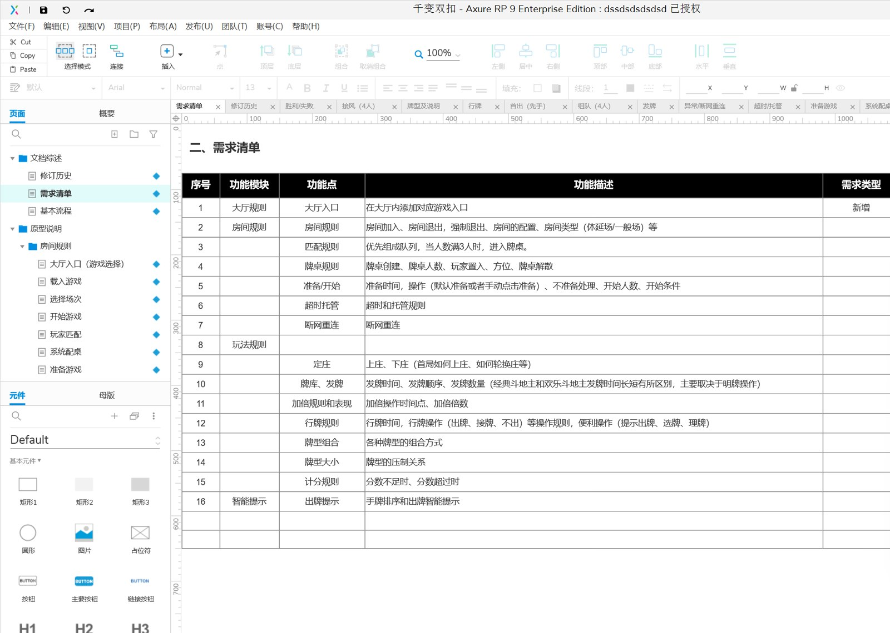
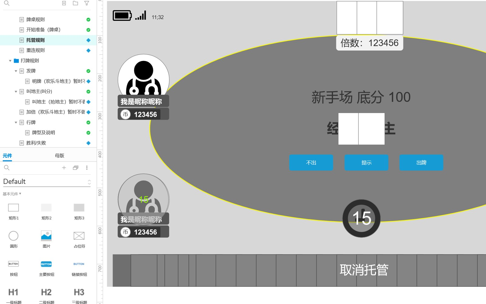
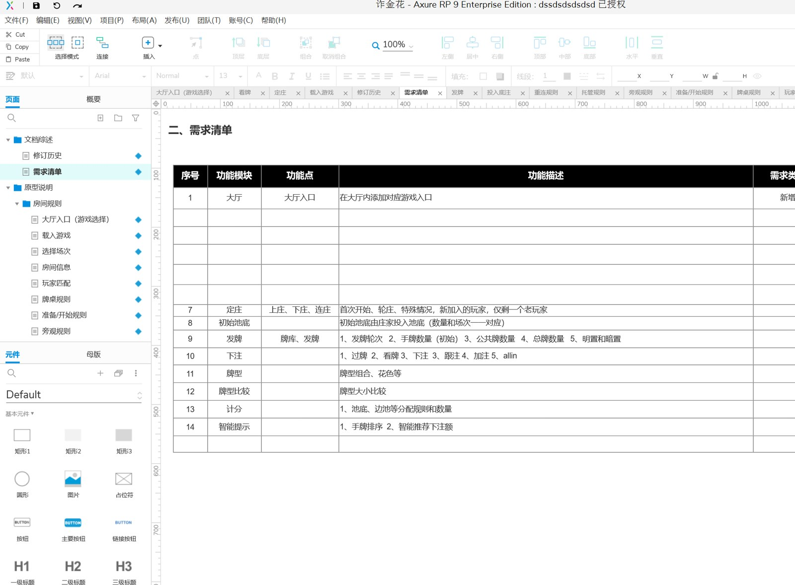

Rules and flows
Review round flow, player actions and settlement rules for multiple game types.
Product design references for card, mahjong and arcade games, including rules, balancing tables and interface prototypes for planning and engineering reviews.
game design documents · card game design · mahjong game design · game UI prototype

Card game configuration and balancing document
Review round flow, player actions and settlement rules for multiple game types.
Inspect configuration fields, rewards and costs used during product planning.
Use real layout previews to align product, UI and engineering discussions.
These images come from existing public repository material. Select an image to view it at full size.


Public scope: The public repository presents product notes and design previews. Confirm the delivery scope of complete documents with the maintainer.
| File | Description |
|---|---|
| README.md | Public MD file: README.md. |
git clone https://github.com/niubideren111/Chess-and-Card-Game-Product-Design-Copy.git
cd Chess-and-Card-Game-Product-Design-CopyThis repository focuses on design documents and prototypes. See the related repositories for client and server code materials.
Product managers, designers and developers who need examples of rules, feature flows and interface prototypes.
Contact the maintainer through the public project channels to discuss the complete project, technical material or licensing scope.
Telegram · @fox_lovemyself · GitHub{kind=link}
{kind=link}
{kind=link}